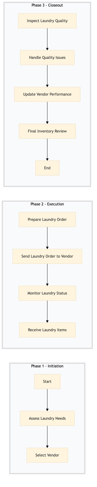

| Role | Steps |
|---|---|
| Executive Housekeeper | 1.1 1.2 3.2 |
| Laundry Coordinator | 2.1 2.2 2.3 2.4 3.1 3.3 3.4 |
| Step | Name | Role | System | Input | Output | KPI | Dec? | Exc? | Pain Point / Risk |
|---|---|---|---|---|---|---|---|---|---|
| 1.1 | Assess Laundry Needs | Executive Housekeeper | Oracle OPERA Cloud | Room status reports, guest feedback | Laundry needs assessment report | Less than 30 minutes | N | Y | Accurate room status reporting |
| 1.2 | Select Vendor | Executive Housekeeper | Birchstreet Procurement | Laundry needs assessment report, vendor database | Vendor selection and contract details | Within 1 hour | Y | N | Vendor reliability and cost-effectiveness |
| 2.1 | Prepare Laundry Order | Laundry Coordinator | Oracle OPERA Cloud | Room status reports, guest feedback | Laundry order form | Less than 30 minutes | N | Y | Accurate room status reporting |
| 2.2 | Send Laundry Order to Vendor | Laundry Coordinator | Birchstreet Procurement, Email/Phone | Laundry order form | Confirmation of receipt | Within 1 hour | Y | N | Vendor communication delays |
| 2.3 | Monitor Laundry Status | Laundry Coordinator | Birchstreet Procurement, Email/Phone | Confirmation of receipt | Status updates | Daily check-ins | Y | N | Vendor status reporting |
| 2.4 | Receive Laundry Items | Laundry Coordinator | Oracle OPERA Cloud | Delivered laundry items | Inventory update | Within 1 day of delivery | N | Y | Accurate inventory tracking |
| 3.1 | Inspect Laundry Quality | Laundry Coordinator | Oracle OPERA Cloud | Delivered laundry items | Quality inspection report | Less than 2 hours per batch | Y | N | Consistent quality standards |
| 3.2 | Handle Quality Issues | Laundry Coordinator, Executive Housekeeper | Oracle OPERA Cloud, Email/Phone | Quality inspection report | Resolution plan | Within 1 day of identification | Y | N | Vendor response time |
| 3.3 | Update Vendor Performance | Laundry Coordinator, Executive Housekeeper | Birchstreet Procurement | Resolution plan | Updated vendor performance record | Within 1 day of resolution | N | Y | Vendor performance tracking |
| 3.4 | Final Inventory Review | Laundry Coordinator, Executive Housekeeper | Oracle OPERA Cloud | Updated vendor performance record | Final inventory review report | Within 1 day of completion | N | Y | Accurate final inventory counts |
This process outlines the management of external laundry vendors at a full-service Marriott hotel using Oracle OPERA Cloud PMS. It ensures efficient linen handling and maintenance to meet guest expectations.